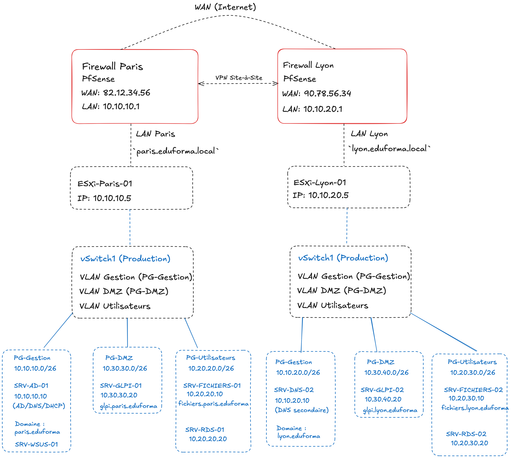

Le groupe de formation professionnelle EduForma possède deux centres principaux :
Chaque site dispose de son propre serveur physique avec VMware ESXi 6.7 installé. Les deux sites sont interconnectés via un VPN site-à-site sécurisé et doivent partager une partie des ressources tout en maintenant une indépendance en cas de rupture du lien VPN. L’objectif est de simuler la mise en production d’un SI hybride, résilient et automatisé, intégrant des OS Windows Server 2022 ou 2019 ou 2019 et Ubuntu Server 22.04 LTS ou 20.04, ainsi que la supervision, la sécurité et l’automatisation de l’administration. En plus des explication et des détails, ci-dessous, vous disposez d'un schéma qui illustre l'infrastructure à construire.

10.10.10.0/2410.20.20.0/2410.30.30.0/24| Site | Serveur | IP | Rôle principal |
|---|---|---|---|
| Paris | pfSense LAN | 10.10.10.1 |
Firewall, VPN, Proxy |
| Paris | SRV-AD-01 | 10.10.10.10 |
Windows Server 2022 ou 2019 : AD, DNS, DHCP, WDS |
| Paris | SRV-WSUS-01 | 10.10.10.11 |
Windows Server 2022 ou 2019 : WSUS |
| Paris | SRV-MONITOR-01 | 10.10.10.15 |
Ubuntu Server : Supervision SNMP via GLPI/FusionInventory |
| Paris | SRV-GLPI-01 | 10.30.30.20 |
Ubuntu Server : Apache, MySQL, GLPI, FusionInventory (DMZ) |
| Lyon | pfSense LAN | 10.10.10.101 |
Firewall, VPN |
| Lyon | SRV-DNS-02 | 10.10.10.110 |
Ubuntu Server : DNS secondaire, DHCP |
Téléchargement et vérification de l’image ISO VMware ESXi 6.7
Installation interactive ESXi sur chaque serveur :
Configuration des disques locaux
Définition des mots de passe root sécurisés
Paramétrage réseau statique des hyperviseurs ESXi :
10.10.10.5/24, Gateway : 10.10.10.110.10.10.105/24, Gateway : 10.10.10.101Configuration DNS (temporaire via IP statique locale, ex. 8.8.8.8)
Connexion à l’interface web ESXi, section Networking
Création des vSwitch suivants sur chaque site :
vSwitch0 : Management & VM NetworkConfiguration des Port Groups (VLAN) :
Validation des configurations (uplinks physiques, interfaces réseau)
Création des VM avec les paramètres suivants :
Assignation correcte des VMs aux Port Groups (selon VLAN prévu)
Installation des systèmes d’exploitation à partir des ISO :
Détail des configurations IP pour les interfaces pfSense :
10.10.10.1/2410.10.10.101/24Configuration du routage inter-VLAN dans pfSense :
Configuration basique de la sécurité (firewall) :
10.10.10.10/24, DNS : 127.0.0.1, Gateway : 10.10.10.1)Installation du rôle Active Directory Domain Services (AD DS) depuis le Gestionnaire de Serveur
Promotion du serveur comme contrôleur de domaine :
eduforma.localRedémarrage et validation du bon fonctionnement du domaine
Installation du rôle DHCP via Gestionnaire de Serveur
Création d'une étendue DHCP :
10.20.20.50 – 10.20.20.150 (VLAN 20 utilisateurs)10.20.20.1), DNS (10.10.10.10), domaine (eduforma.local)Configuration des réservations DHCP statiques pour les VMs clés et postes administratifs :
PC-ADMIN-01 : 10.20.20.51, PC-TECH-02 : 10.20.20.52Création des Unités Organisationnelles (OUs) :
OU_Utilisateurs, OU_Administrateurs, OU_Formateurs, OU_TechniciensCréation des groupes d’utilisateurs selon la méthode Microsoft AGDLP :
G_Formateurs, G_Tech, G_Admins, G_RH)DL_Access_GLP, DL_RDS_Users, etc.)Création d’utilisateurs tests :
admin.paris, tech.lyon, formateur1, etc.Création de GPO sur les OUs appropriées :
GPO_Sécurité_Password : expiration 60j, complexité forte.GPO_Mappage_disques_réseau : Montage automatique lecteur réseau via DFSGPO_Paramètres_RDS : Paramétrage de sessions RDP (déconnexion après 30min inactivité, etc.)Validation des GPO (commande gpupdate /force, vérification via rsop.msc)
eduforma.localInstallation interactive depuis l'ISO officielle Ubuntu Server 22.04 LTS
Configuration réseau initiale :
10.10.10.110/2410.10.10.101 (pfSense Lyon)10.10.10.10 (DNS primaire Paris)Mise à jour complète du serveur (sudo apt update && sudo apt upgrade)
sudo apt install bind9 bind9utils dnsutils
Configuration DNS secondaire :
Fichier /etc/bind/named.conf.options :
10.10.10.10) et DNS public (8.8.8.8)Fichier /etc/bind/named.conf.local :
eduforma.localallow-transfer côté serveur primaire)Redémarrage et vérification du bon fonctionnement (dig SRV-AD-01.eduforma.local @localhost)
sudo apt install isc-dhcp-server
Configuration du fichier /etc/dhcp/dhcpd.conf :
Étendue DHCP Lyon : 10.20.20.151 à 10.20.20.200
Options DHCP : passerelle (10.20.20.101), DNS (10.10.10.110 et 10.10.10.10), domaine (eduforma.local)
Réservation IP pour postes administratifs locaux :
PC-LYON-ADM-01 : 10.20.20.152Activation du service DHCP :
sudo systemctl restart isc-dhcp-server
sudo systemctl enable isc-dhcp-server
sudo apt install openssh-server
Sécurisation SSH (modification /etc/ssh/sshd_config) :
PermitRootLogin noAllowUsers adminlyonPasswordAuthentication no)Génération de clé RSA (depuis un poste admin) et copie vers SRV-DNS-02 via ssh-copy-id :
ssh-keygen -t rsa -b 4096
ssh-copy-id adminlyon@10.10.10.110
ssh adminlyon@10.10.10.110)A. Script de sauvegarde automatique quotidienne
/opt/scripts/backup_daily.sh/etc, /var/log, /home/mnt/backups (montage réseau DFS via CIFS sur SRV-FICHIERS-02)/etc/crontab) :0 1 * * * root /opt/scripts/backup_daily.sh
B. Script de scan réseau local avec Nmap et rapport d’uptime
/opt/scripts/network_scan.sh/var/log/network_scan.lognmap -sn 10.10.10.0/24 >> /var/log/network_scan.log
uptime >> /var/log/network_scan.log
0 7 * * * root /opt/scripts/network_scan.sh
C. Script de surveillance et alertes par email
ssmtp) pour l’envoi d’alertes :sudo apt install ssmtp mailutils
Configuration /etc/ssmtp/ssmtp.conf avec SMTP externe (ex : Gmail SMTP)
Script : /opt/scripts/check_alert.sh
df -h)cat /var/log/auth.log | grep "Failed password")Exemple commande envoi mail depuis le script :
echo "Alerte sécurité sur SRV-DNS-02 !" | mail -s "Alerte SSH/DISK SRV-DNS-02" admin@eduforma.com
0 * * * * root /opt/scripts/check_alert.sh
Vérifier :
Installation du rôle WSUS depuis le gestionnaire de serveur Windows Server 2022 ou 2019
Création d'un dossier dédié aux mises à jour : D:\WSUS
Configuration initiale WSUS :
Configuration GPO pour clients WSUS (serveurs et postes clients) :
http://srv-wsus-01.eduforma.local:8530Tests d'intégration :
sudo apt install apache2 php mariadb-server php-mysql php-curl php-gd php-mbstring php-xml php-ldap php-zip
CREATE DATABASE glpi;
CREATE USER 'glpiuser'@'localhost' IDENTIFIED BY 'MotDePasseGLPI';
GRANT ALL PRIVILEGES ON glpi.* TO 'glpiuser'@'localhost';
FLUSH PRIVILEGES;
wget https://github.com/glpi-project/glpi/releases/download/10.0.11/glpi-10.0.11.tgz
tar -xzf glpi-10.0.11.tgz -C /var/www/html/
chown -R www-data:www-data /var/www/html/glpi
Accès GLPI via http://10.30.30.20/glpi et finalisation installation via interface web (choisir BDD créée précédemment)
Installation plugin FusionInventory pour GLPI via interface web
Installation agents FusionInventory sur postes clients Windows pour remontée automatique inventaire :
http://10.30.30.20/glpi/plugins/fusioninventory/Installation rôle DFS Namespace et DFS Replication via gestionnaire serveur (Windows Server 2022 ou 2019)
Création namespace DFS : \\eduforma.local\Partages
Configuration réplication DFS entre Paris (SRV-FICHIERS-01) et Lyon (SRV-FICHIERS-02) :
\\eduforma.local\Partages\CommunCréation script PowerShell : /scripts/create_ad_users.ps1
Contenu du script :
utilisateurs.csv) avec attributs : prénom, nom, OU, groupe AD, mot de passe initial, compte activéTest et validation de création utilisateurs dans AD via script
Installation et configuration Windows Deployment Services (WDS) :
D:\RemoteInstallInstallation et configuration de Microsoft Deployment Toolkit (MDT) :
D:\MDTDeploymentShareCréation et capture d'image WIM personnalisée :
Configuration déploiement automatisé avec fichiers de réponse unattend.xml :
Configuration DHCP options PXE sur SRV-AD-01 (DHCP option 66 Boot Server : 10.10.10.10 ; option 67 : boot\x64\wdsnbp.com)
Tests déploiement de poste via PXE boot avec WDS/MDT :
eduforma.local)Connexion à l’interface web pfSense des deux sites
Configuration VPN IPsec côté Paris (Phase 1 et Phase 2) :
10.10.10.0/24, 10.20.20.0/24, 10.30.30.0/24Configuration VPN IPsec côté Lyon (symétrique à Paris)
Vérification état connexion VPN (Status > IPsec), tests connectivité inter-site (ping, traceroute)
Installation du paquet Squid depuis le gestionnaire de paquets pfSense
Configuration Squid en mode proxy transparent :
Activation transparente sur VLAN Utilisateurs (10.20.20.0/24)
Activation logs Squid (/var/squid/log/access.log)
Configuration ACL de sécurité :
Tests de filtrage proxy sur poste client :
Installation agents SNMP sur les serveurs Windows (via fonctionnalités Windows) et Linux :
sudo apt install snmpdConfiguration SNMP :
EduFormaSNMPv2c10.10.10.15 (SRV-MONITOR-01)Activation SNMP sur pfSense (interface web pfSense → Services → SNMP) :
EduFormaSNMP10.10.10.15Installation GLPI/FusionInventory sur SRV-MONITOR-01 (10.10.10.15)
Configuration GLPI/FusionInventory :
Activation du module SNMP
Tâche de découverte réseau SNMP :
10.10.10.0/24, 10.10.20.0/24), VLAN Utilisateurs (10.20.20.0/24, 10.20.30.0/24), VLAN DMZ (10.30.30.0/24, 10.30.40.0/24)Validation inventaire et remontée informations SNMP dans GLPI :
Scénario de panne simulée :
Validation bascule automatique vers DNS secondaire (SRV-DNS-02 à Lyon) :
/var/log/syslog Bind9)Identification et gestion de l’incident :
Diagnostic rapide panne DNS primaire (logs événements Windows Server)
Rédaction rapport incident :
Validation retour en fonctionnement nominal des résolutions DNS via SRV-AD-01 après rétablissement :
Évaluation finale : Présentation technique (30 min) devant le formateur :